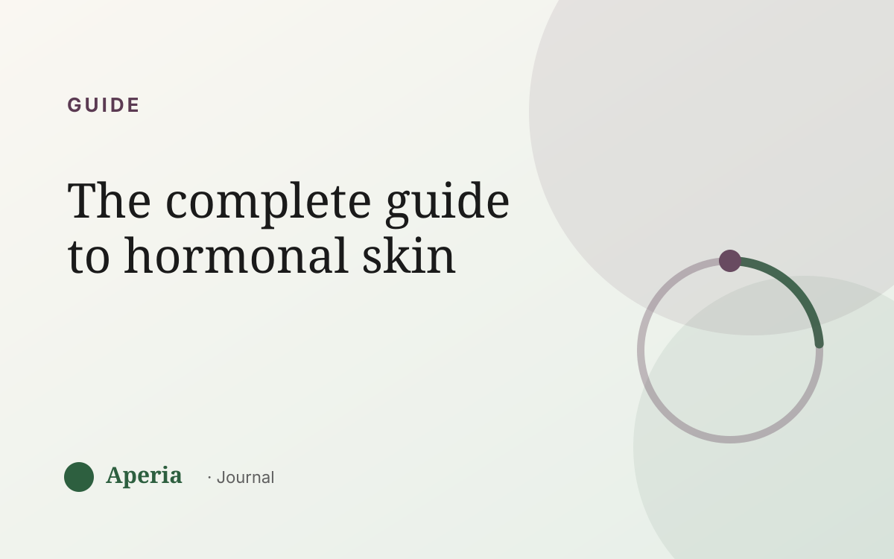

Guide
The complete guide to hormonal skin
If your skin seems to break out on its own schedule — the same week, the same spots, month after month — this guide is for you. It pulls together everything Aperia's Journal covers into one place: what ‘hormonal skin’ really means, why it moves the way it does, and how to finally read your own rhythm instead of guessing. Nothing here is a diagnosis; it's a way of understanding your own skin.
What ‘hormonal skin’ actually means
‘Hormonal skin’ simply means skin that visibly responds to the natural rise and fall of your hormones. Everyone's skin does this to some degree; for some people it's dramatic, for others subtle. It isn't a flaw or a failure of your routine — it's your skin reacting to a rhythm that repeats every month. Read more in hormonal breakouts vs regular breakouts.
The cycle behind your skin
Two hormones do most of the conducting: estrogen, which rises in the first half of your cycle and is linked to skin at its calmest and clearest, and progesterone, which becomes prominent in the second half, when skin tends to get oilier and more breakout-prone. A little testosterone plays into oil production too. Together they create a monthly wave. We break it down in estrogen, progesterone and your skin and why your breakouts follow your cycle.
Your best skin week and your flare week aren't luck. They're two points on the same hormonal wave.
Where hormonal breakouts show up
Hormonally-driven breakouts tend to cluster in the lower third of the face — the chin and along the jaw, sometimes the lower cheeks — because the oil glands there respond most to the hormonal shift. If your spots keep landing in that band, that's a strong signal. See why you break out on your chin and jawline.
Your skin across the month
Skin runs a predictable arc: a flare in the days before your period, a possible calm-or-dry stretch during it, and a clearer lift in the week after. You can let your care move gently with that arc — without overhauling everything. See what happens to your skin during your period and a skincare rhythm for every phase of your cycle.
The four inputs that drive your skin
Your cycle is the biggest rhythm, but three everyday inputs stack on top of it: sleep, stress and food. A high-stress, low-sleep week landing on your flare week is often when skin looks its worst. Understanding all four together is what turns ‘why is this happening?’ into ‘of course.’ See what actually drives your skin, how stress and cortisol affect your skin, and do dairy, sugar and stress cause breakouts?
Is your skin actually hormonal? How to tell
Three tells, together: timing that follows your cycle, location on the lower face, and a pattern that repeats. You can't tell from a single week, but tracking your skin next to your cycle for two or three months makes it clear. See how to tell if your breakouts are hormonal.
What actually helps
The biggest wins aren't a new product every week. They're consistency (a steady, gentle routine kept up all month), anticipation (knowing when your flare week lands), and patience (skin renews over four to six weeks, so real change takes a couple of cycles). See how long it takes to see skin improvement.
How to read your own skin
All of this becomes real when you can see it. Aperia scans your skin and scores it by zone, tracked alongside your cycle, sleep, stress and food — so your flare week, your calm week and your progress over time become visible, with dates attached. See how Aperia reads your skin.
Common questions
What is hormonal skin?
Hormonal skin is skin that visibly responds to the natural rise and fall of your hormones across your cycle — often getting oilier and more breakout-prone in the second half of the month. It's a normal pattern, not a flaw or a diagnosis.
How do I know if my breakouts are hormonal?
Look for timing that follows your cycle (often the week before your period), location on the lower face (chin and jaw), and a pattern that repeats month after month. Tracking your skin alongside your cycle for a couple of months makes it clear.
Where does hormonal acne appear?
Most often the lower third of the face — chin, jawline and sometimes lower cheeks — where oil glands respond most to hormonal shifts.
Can hormonal skin be improved?
You can't change your cycle, but consistency, anticipating your flare week, managing sleep and stress, and giving changes a couple of months tend to help most. Understanding your own pattern is the foundation. If you're concerned about your skin, speak to a qualified professional.
Does hormonal skin affect men?
Yes. Hormones influence oil and breakouts in everyone. Men don't have a monthly cycle, but hormonal shifts still affect their skin.
See your own skin rhythm
Track your skin and your cycle together. Free to start.
Download on the App StoreAperia is a self-knowledge tool, not a medical service. It helps you understand and track your skin; it doesn't diagnose, treat or cure anything. If you're concerned about your skin, talk to a qualified professional.